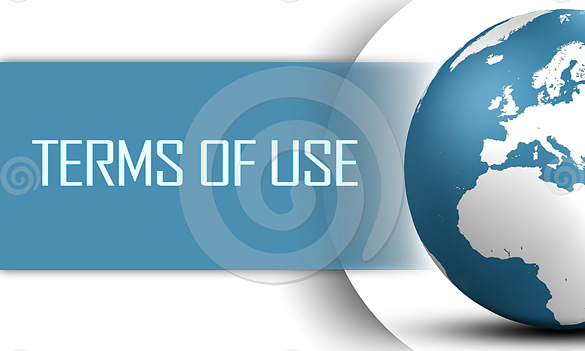

Special Lecithins for Special Applicationstd
Introduction

Why Lecithin?
Lecithin is the most accurate example of functionality and health combined in the same food ingredient.
It is naturally present in all living organisms as main constituent of cell membranes and due to its selective permeability; it is responsible of the passage of substances in and out of the cells. (Wikipedia link: membrane cell)
PICTURE (membrane) fotolia nr 52245712
Nature Alive

PICTURE (membrane)
The word Lecithin (wikipedia link) is derived from the Greek word lekythos which means egg’s yolk and it was discovered for the first time in 1846 by the French chemist Théodore Nicolas Gobley (Wikipedia link) analyzing the eggs and the brain matter.
The primary commercial source of Lecithin comes from soybeans, only more recently it is available from other vegetable sources like sunflower and rapeseed.
Todays’ consumers are very conscious that food is directly related to their health: Lecithin is the emulsifier of choice for the food industries, which want to offer healthy ingredients to the consumers.
AgroHorizon has the capability and the knowledge to give the best functionality to Lecithin required by the food industries in order to produce safe food with the desired properties.
PICTURE (Lecithin in glass)

PICTURE(Lecithin in glass)
Lecithin Processing
After harvesting, soybeans are cleaned and conditioned. Then cracked, de-hulled and rolled into flakes.
Flakes are extracted to obtain the vegetable oil. The addition of water to the crude oil hydrates the phosphatides (the main components of Lecithin), making them oil-insoluble. The material is then dried and fluidized to produce standard grade Lecithin or used as source to produce more functional or easy-to-use products.
The composition of Lecithin can vary depending on its origin, processing (extraction method) and of course quality of the soybeans.
Lecithins can be enzymatically modified by hydrolyzing a fatty acid (Lyso-Lecithin): This modification gives a variety of new different properties to the Lecithin, extensively useful for the food industries.
Here is the main function of AgroHorizon: selecting the most appropriate Lecithins, controlling the analytical parameters and generating even more functional or flexible products by the addition of other ingredients.
Chemical Composition
Chemically Lecithin is a mixtures of different phospholipids (Wikipedia link) presenting generally the structure of triglycerides, but one of the fatty acids being substituted by a functional group. Phospholipids consist mainly of Phosphatidylcholine (PC), Phosphatidylethanolamine (PE), Phosphatidylinositol (PI) and Phosphatidic Acid (PA) combined with other minor phospholipids, glycolipids and other substances like triglycerides, sugars, tocopherols and free fatty acids.

PICTURE (composition)
Functional Properties
Lecithin is a mixture of surface-active agents. Most of the surfactant properties of Lecithin can be attributed to the phospholipids. These contain a hydrophobic (lipophilic) part with an affinity for fats and oils and a hydrophilic (lipophobic) part with an affinity for water. This double behaviour gives a strong surface activity to the Lecithin able to reduce the surface tension between immiscible liquids like water and oil (emulsification).
The emulsification properties of the different types of Lecithins can be assigned based on the well-known
hydrophilic-lipophilic balance (HLB).

Picture HLB
HLB reflects the size and the strength of the hydrophilic (the polar part of the molecule) and the lipophilic (the apolar or oil loving) groups on emulsifiers. Due to the surface activity Lecithin can form stable O/W and W/O emulsions and stable dispersions with a wide range of uses.

Picture emulsion
In addition to its emulsifying strength, Lecithin has the capacity to modify the rheology of sugars and fats due to its lubricity and viscosity reduction properties, by reducing the contact surface of incompatible solids, like in cream fillings and chocolate.
Nutritional Propertiess
Lecithin is a source of unsaturated fatty acids especially linoleic (C18:2), precursors of Omega 3 and the most active source of choline, being associated to phospholipids (Phosphatidylcholine).
FDA has assigned to choline a RDI (Recommended Daily Intake) having recognized its functions in many biological functions. (Wikipedia link)
Lecithin functionality was also studied in the 1980s in relation to cholesterol reduction, and a mechanism for transforming LDL cholesterol into HDL cholesterol was speculated.
Lecithin is a source of phosphorus and is rich of natural tocopherols (vitamin E) of up to 2000 mg/kg.
Inventiveness to the Point

How to Challenge our Thoughts ?
Our Portfolio: Thinking Lecithin from Application
Lecithin is a high quality side-stream product of the vegetable oil milling industry. Lecithin makes the oil opaque and untransparent Thus, it has to be extracted from the vegetable oil. As a spin-off product, it is unfortunately often misunderstood. It is marketed in most cases, because the Lecithin-tank at the end of the day has to be empty.However, this perspective does not help the final user of Lecithins, whether he is a food producer or manufacturer of chemical/technical products.
Inventiveness
Lecithin has to provide an ideal feature to the end-user, adapted to the needs of the finished product.
Are emulsification, flow-properties, the colour, the composition of Lecithin from the origin, the microbiology, the viscosity, GMO status, functionality with other ingredients (or many other features) matching the needs of the process?
If you just take the by-product of the oil mill (because it exists) into the focus, you will be unable to meet these diverse requirements of the customers.
AgroHorizon accurately wants to understand the application and customer needs to choose the Lecithin that suits you and your product.
Not one Lecithin resembles another Lecithin. We are facing a natural resource that is obtained in very different ways from different global regions with different soils and from different plants. Many parameters of Lecithin extraction/separation affect the application in the final product.At this stage, AgroHorizon is launching its expertise. We analyze the client's needs and (after that) select the best suitable Lecithin.
Never the reverse!
Since AgroHorizon has no dependency to sell certain, available Lecithins, we can select the right material for you.
In addition, we are able (on top of the normal standardization) to customize and compound - even small lot sizes.
Compliance with specific analytical characteristics (e.g. microbiology or contaminants) can be evaluated with us.
Challenge us. We have an extensive network of own and external expertise.
We probably have a better answer to your questions than you got so far.
Perfection Made Easy
New Products
Range of Solutions
AgroHorizon offers a multiyear expertise to design, produce, control and document the Lecithin of Completeness for your Application.
perfection
- Lecithin on Carriers
- Lecithin with Anti-Oxidants
- Lecithin with other Emulsifiers
- Lecithin with Vitamins
- Lecithin from Organic Crops
- Lecithin with Enzymes
- Lecithin with other Vegetables Oils or Fats
- Lecithin with Adjusted/Selected Colour
- Lecithin with Adjusted Viscosity
- Lecithin passing Customer Specific Control Features
- Lecithin with Controlled Phospholipid – Pattern
- Lecithin with Controlled Microbiology following Guidelines for Infant- and Clinical-Nutrition
- Lecithin with Supervised Contaminants
- Lecithin targeting for Pharmaceutical Standards
- Lecithin modified in Hydrophilic Performance
- Lecithin based on soya, sunflower, rapeseed
Trust
Valuable Co-operation
Our Mission
AgroHorizon is intending to be always very flexible. For the sake of our customers and their business. Nonetheless, this attitude is continually based on the following key parameters of our outside and inside doings:
Trust
1) Legal Compliance:
Following both the letter and spirit of the law to counter fraud, corruption, bribery and deceit.
2) Transparency
Setting the cultural tone from the top by encouraging dialogue on ethical issues and disclosing information in a full, accurate and timely manner.
3) Conflict Identification
Actively identifying and addressing potential conflicts of interest and appearances of impropriety.
4) Accountability
Emphasizing quality, customer protection, environmental sustainability and integrity in the supply chain.
Small as David
How to Challenge our Thoughts ?
Contacts and Partners
① AgroHorizon has a global network of knowledge where to source the correct Lecithin for your application.
② AgroHorizon has an overlaying excellent network of Third – Party - Experts to process the Lecithin into the reliable Specification.
David
③ AgroHorizon is managing a highly qualified network of technical and commercial experts to market our tailor-made Lecithins to the final end-user.
AgroHorizon:Terms of use

Terms of Use
This legal notice applies to the entire contents of the Website and to any correspondence by e-mail between us and you. Please read this legal notice carefully before using the Website. By accessing any part of the Website, you shall be deemed to have accepted this legal notice in full and using the Website indicates that you agree to abide by these terms of use. If you do not accept this legal notice in full, you must leave the Website immediately.
Terms
1. Access to Website
The information on this Website is intended to be useful and informative for customers and suppliers of AgroHorizon. Access to this Website and the use of the information which appears on it are governed by the following terms and conditions. These terms and conditions are important and they may affect your rights. Please take time to read them carefully each time you visit this website. The viewing of this website may not be lawful in certain jurisdictions. Any person resident outside of the Republic of Ireland who wishes to view this website must first satisfy themselves that they are not subject to any local requirements which prohibit or restrict them from doing so. If you are not permitted to view this website, or are in any doubt as to whether you are permitted to view this website, you must exit this website. AgroHorizon may revise the terms and conditions at any time by updating this legal notice.
2. Links to other sites
Links to third party websites on the Website are provided solely for your convenience. If you use these links, you leave the Website. AgroHorizon has not reviewed all of these third party websites and does not control and is not responsible for these websites or their content or availability. AgroHorizon therefore does not endorse or make any representations about them, or any material found there, or any results that may be obtained from using them. If you decide to access any of the third party websites linked to the Website, you do so entirely at your own risk.
3. Links to this site
You may link to our home page only, provided you do so in a way that is fair and legal and does not damage our reputation or take advantage of it, but you must not establish a link in such a way as to suggest any form of association, approval or endorsement on our part where none exists.
If you would like to link to this Website, you may only do so on the basis that you link to, but do not replicate, the home page of the Website, and subject to the following conditions:
• You do not remove, distort or otherwise alter the size or appearance of the AgroHorizon logo
•You do not create a frame or any other browser or border environment around the Website
•You do not otherwise use any AgroHorizon trade marks displayed on the Website without express written permission from AgroHorizon
•you do not misrepresent your relationship with AgroHorizon nor present any other false information about AgroHorizon;
•you do not link from a website that is not owned by you; and
• your website does not contain content that is distasteful, offensive or controversial, infringes any intellectual property rights or other rights of any other person or otherwise does not comply with all applicable laws and regulations.
AgroHorizon expressly reserves the right to revoke the right granted in clause 3 for breach of these terms and to take any action it deems appropriate.
You agree to fully indemnify AgroHorizon for any loss or damage suffered by it or any of its group companies for breach of this clause.
4. Viruses, hacking and other offences
You must not misuse our site by knowingly introducing viruses, trojans, worms, logic bombs or other material which is malicious or technologically harmful. You must not attempt to gain unauthorised access to our site, the server on which our site is stored or any server, computer or database connected to our site. You must not attack our site via a denial-of-service attack or a distributed denial-of service attack.
By breaching this provision, you may commit a criminal offence. We will report any such breach to the relevant law enforcement authorities and we will co-operate with those authorities by disclosing your identity to them. In the event of such a breach, your right to use our site will cease immediately.
We will not be liable for any loss or damage caused by a distributed denial-of-service attack, viruses or other technologically harmful material that may infect your computer equipment, computer programs, data or other proprietary material due to your use of our site or to your downloading of any material posted on it, or on any website linked to it.
5. Intellectual property rights
The contents are © AgroHorizon Trading&Consulting. Please note that all images and information contained on this website may be copyrighted works. Either the copyright and all other rights in all of the material on this website are owned by a member of AgroHorizon or the material is included with the permission of the rights of the owner. Except for the making of a hard copy print for your own personal use only or the use of others in your organisation (or downloading the material for your own personal use or the use of others in your organisation only provided that you retain all copyright and proprietary notices), the material on this website may not be copied, reproduced, transmitted, distributed or displayed, by any means, without the express prior written consent of AgroHorizon. If you breach any terms in this legal notice your permission to use the Website automatically terminates and you must, at our option, immediately return or destroy any downloaded, printed or copied extracts from the Website.
6. Disclaimer
While AgroHorizon endeavours to ensure that the information on the Website is correct, it does not warrant the accuracy and completeness of the material on the Website. AgroHorizon may make changes to the material on the Website at any time without notice or the material on the Website may be out of date and AgroHorizon makes no commitment to update such material.
The material on the Website is provided "as is", without any conditions, warranties or other terms of any kind. Accordingly, to the maximum extent permitted by law, AgroHorizon provides you with the Website on the basis that it excludes all representations, warranties, conditions and other terms (including, without limitation, conditions implied by statute, common law or the law of equity) which, but for this legal notice, might have effect in relation to the Website. AgroHorizon does not assume any guarantee against patent infringement, liabilities or risks involved from the use of information on the Website. Any health claims, if any, contained on the Website are for illustration purposes only and are subject to approval by the relevant regulatory authority in each country where purchasers market final consumer products.
7. Liability
AgroHorizon any other party (whether or not involved in creating, producing, maintaining or delivering the Website), and any of AgroHorizon's group companies and the officers, directors, employees, shareholders or agents of any of them, exclude all liability and responsibility for any amount or kind of loss or damage that may result to you or a third party (including without limitation, any direct, indirect, punitive or consequential loss or damages, or any loss of income, profits, goodwill, data, contracts, use of money, or loss or damages arising from or connected in any way to business interruption, and whether in tort (including without limitation negligence), contract or otherwise) in connection with the Website in any way or in connection with the use, inability to use or the results of use of the Website, any websites linked to the Website or the material on such websites, including but not limited to loss or damage due to viruses that may infect your computer equipment, software, data or other property on account of your access to, use of, or browsing the Website or your downloading of any material from the Website or any websites linked to the Website.
Nothing in this legal notice shall exclude or limit AgroHorizon's liability for death or personal injury caused by our negligence or any person for which we are responsible.
8.1 Acceptable use for user generated content (“acceptable use policy”)
We may from time to time provide interactive services on our site, including, without limitation chat rooms, bulletin boards, blogs and forums (interactive services). Where we do provide any interactive service, we will provide clear information to you about the kind of service offered, if it is moderated and what form of moderation is used (including whether it is human or technical).
We will do our best to assess any possible risks for users (and in particular, for children) from third parties when they use any interactive service provided on our site, and we will decide in each case whether it is appropriate to use moderation of the relevant service (including what kind of moderation to use) in the light of those risks. However, we are under no obligation to oversee, monitor or moderate any interactive service we provide on our site, and we expressly exclude our liability for any loss or damage arising from the use of any interactive service by a user in contravention of our content standards, whether the service is moderated or not. The use of any of our interactive services by a minor is subject to the consent of their parent or guardian. We advise parents who permit their children to use an interactive service that it is important that they communicate with their children about their safety online, as moderation is not fool proof. Minors who are using any interactive service should be made aware of the potential risks to them. Where we do moderate an interactive service, we will normally provide you with a means of contacting the moderator, should a concern or difficulty arise.
8.2 Suspension and termination
We will determine, in our discretion, whether there has been a breach of this policy through your use of our site. When a breach of this policy has occurred, we may take such action as we deem appropriate.
Contacts

- AgroHorizon is representing the following Partners
- AgroHorizon can be contacted via the following channels:
- Email : agrohorizon @ agrohorizon.com
Contact
Telephone:
Ireland: +353 851781956
Italy:+39 335337177
Germany: +49 15151438372